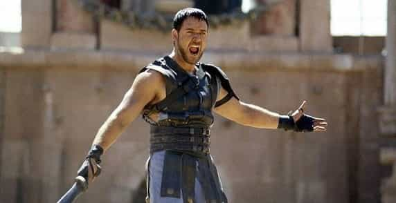
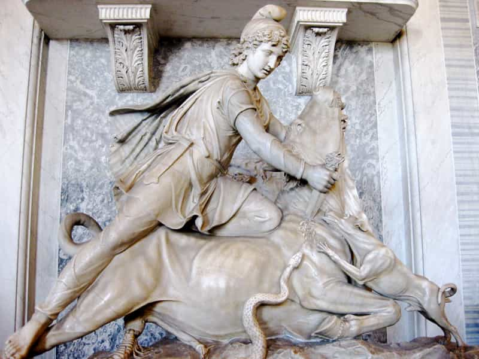
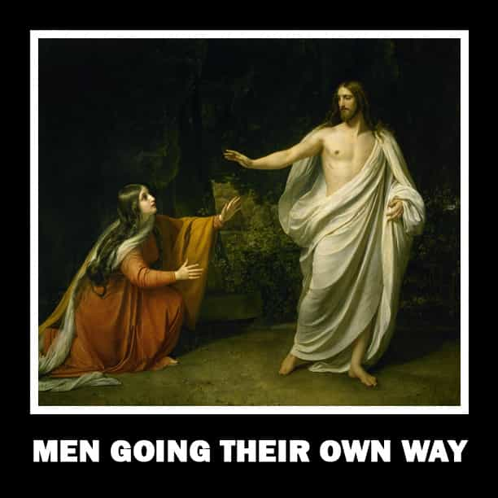
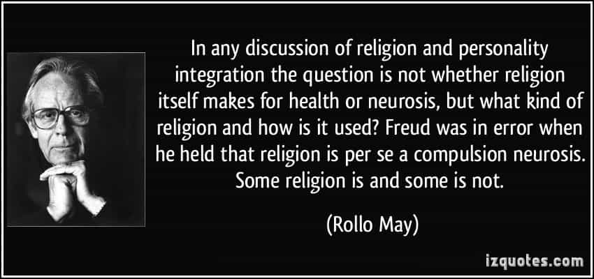

< < < Back
Will Neomasculinity Create A New Patriarchal Religion? – Return Of Kings
As neomasculinity is refined and polished, can we look to history to see if a new masculine and patriarchal religion may also arise for future kings to claim authority by?
The background needed to answer this question came to me in reading a book by an author that started the gay rights movement in the 60s and 70s. Yes, a gay man may have inadvertently written the very book that predicted the coming patriarchal renaissance in the West.
The God Of Ecstasy: Sex-Roles and the Madness of Dionysus was written by Arthur Evans, an early gay rights advocate who is best known for his book Witchcraft and the Gay Counterculture. The God Of Ecstasy is the Bible, in my opinion, of the entire Western feminist and SJW attack on Christian patriarchy and heterosexuality. If read with those eyes, one cannot help but agree with the author’s conclusion by the last chapter.
Planet earth has a male problem.
Arthur Evans – The God Of Ecstasy (1988), p 176

Which is to say, a male HETEROSEXUAL problem.
If you read this book and replace patriarchy with heterosexuality, the author’s entire argument would still be valid. This book confirmed for me my theory that it is not patriarchy, but heterosexuality that is the real enemy of SJWs, and yes, perhaps even the gays themselves. (A gay man saying there is a male problem is pointing directly at himself. Thus, his logical argument must be a male problem of a SEXUAL nature, i.e. heterosexuality.)
While Arthur Evans, a militant atheist, did an extraordinary job of tracing the historical, religious and political rise of “patriarchy,” he failed to realize that if viewed from a religious conservative lens (God – truth – justice), what he has also done is trace the history of the rise and triumph of the heterosexual moral world view. Which, not surprisingly, gave rise to a heterosexual religion: Christianity. Thus, Evan’s book is also a history of religious development in the West.
In short, what Evans has to say about patriarchy is as follows:
- There was a time when the mother goddess was worshiped going back to the stone age
- The mother goddess had a king, consort, or son who just happened to be an effeminate, gay, transvestite
- Everyone partied, got drunk (wine) and got high (drugs were added to the wine, not in this book but another I have read)
- Suddenly, these “war lust” patriarchal men came down from the north
- Over time, these aristocratic patriarchs first absorbed, them sublimated, then eliminated the loving mother goddess and her effeminate Son of God Dionysus (in many forms) from society and culture (No, I am not making this up, this is history.)

While Evans blames the destruction of the peace, joy, ecstasy and happiness of the mother goddess and her effeminate son on the war loving patriarchal invaders from the north, I believe the truth is far more simple than that.
The growing truth of male paternity, and thus of natural sex defined gender roles and identity
Thus, a new religious-political framework emerged to match the new, and scientifically accurate, understanding of the procreative process. Very quickly, children and wives became the property of the father under his protection and supervision. It took awhile, but in time, Christianity was the salvation religion that summed up the growing knowledge of man and God at the time.
- There is a single power in the universe
- This power governs over all humanity with truth and justice
- Man and woman are the foundational unit of society (i.e. children and family in heterosexual marriage)
- The state was created for the protection of the family unit
- Anything that threatened the family unit was to be eliminated (i.e. anything counter to the discovery of the male role in procreation)
This is what they gay author Arthur Evans truly laments about the patriarchal oppression of humanity.
The rise of heterosexual moral views on sex and gender
Paternity, to heterosexuality, to patriarchy.
In reading this fascinating book, I question popped up in my mind. Was there a religion for pure, heterosexual men in the past?
While there does not seem to be any evidence for this in Greece, Rome is another story. Evans points out that Rome and the Roman Empire was particularly patriarchal.
The absence of such a thrust [a patriarchal God, Zeus, legitimizing Dionysus to be accepted by Greeks] on Shiva’s part [the Dionysus equivalent in The East] and his [Shiva’s] demand to be accepted as a god on his own terms imply that the victory of patriarchal [i.e. heterosexual] religion in India has not been as extensive as it was in Greece.
Arthur Evans – The God Of Ecstasy(1988) p 134, my notes in braces and emphasis added
I have always wondered if there was something particularly unique about the West. There is. It is an acceptance and elevation of the masculine, heterosexual man, something you just don’t find in eastern culture to the same degree. If this was the case, where did these men find religion, find salvation, in the culture of their time in history?

Mithraism
Mithraism was a unique and short lived mystery cult in Rome that was subscribed to mostly by the Roman soldiery. Its basic beliefs and practices were:
- A single God, Sol Invictus (the sun), the invincible one that never dies (life everlasting)
- Mithras born from a rock, not a God or Goddess
- Ritual meals of good food and drink
- Members were “united by the handshake”
- Met in underground temples apart from mainstream society
- A secret mystery cult open to men only
- Rome was its centre
While Mithraism draws on Persian origins, the debate is still on as to whether it is a direct copy. Much evidence does seem to hint that the Roman version is a distinct variant in the West and I would support this with the above observation by Evans that patriarchy (i.e. heterosexuality) was distinctly greater in The West than The East.
Evans does reference Mithras in his book (p 161), but makes the completely incorrect assessment on what the bull represents. Evans believes that the bull sacrificed by Mithra is yet more evidence of a past goddess and bull (i.e. Dionysus) religion being everywhere worshiped in the past. Technically, he is correct, but he is not able to connect worship of Mithra to worship of the bull because he can’t. He is merely trying to point out similarity to Christ’s birthday with that of Mithras (Dec 25th). Thus, he is arguing that Christ or Mithras is yet another form of Dionysus worship since the bull was sacred to Mithraism and the idea of a life after death salvation was central to Dionysus worship (especially the Orphic version).
What Evans fails to see, or does not want to, is that the bull, the symbol of the god Dionysus, is SLAUGHTERED by Mithras. Everywhere else, the bull is worshiped and if not, those that deny the bull god Dionysus are themselves driven mad and ritually slaughtered as punishment (cue Euripides Bacchae).
In Mithraism, the bull or Dionysus symbol is NOT worshiped, only Sol Invictus, the invincible one is. Another fact of separation is the birth, death, and re-birth cycle is broken completely, rejected, and a new everlasting life after death mystery takes its place.
Perhaps what we have here in Mithraism is reference to an underground male heterosexual revolution and rejection of the entire alcohol and drug crazed, goddess-and-homosexual worshiping nonsense of mainstream society?

In ancient times, where does a pure, 100% heterosexual man go to temple?
You really had only two options if you were not a Jew, hinting at an explanation for why Christianity was so widely embraced when Paul preached to Gentiles:
1) Some variant of a female goddess (usually a militant virgin), or a male god that merely took over the role once assigned to a goddess
2) The effeminate transvestite god running around dressed and acting like a woman demanding you worship him or get ripped to pieces for denying his divinity or his homosexual advances. (Evans skirts around this issue but I believe it is to be found if one reads closely enough.)
These were your religious options as a male heterosexual in ancient Rome. Is it any wonder the Roman soldiery came up with their own religion?
Thus, what we appear to have in Mithraism is:
- A bunch of heterosexual men (my hypothesis)
- Who fight in the army to protect their families and increase their ability to provide for them
- Who believe the state is the best form of protection for the family they are responsible for
- Meeting in secret
- To worship a single God or power that is never defined in any written orthodox scripture to get into arguments over
- Who greet each other as members with a simple and distinctly masculine handshake (So, just friends then right? You don’t want to butt-fuck me do you?)
- Then go about eating, drinking, socializing, carousing and having a grand old time without any women or faggots pestering or nagging them
Does that sound familiar at all to anyone here? As a Roman heterosexual male soldier, would you want to join that kind of mystery cult?

While the idea of a new patriarchal religion arising out of neomasculinity may sound absurd at first read, it is not when you look to the past 2000 plus years of patriarchal history.
Jesus Christ came into the picture at the time of Rome’s collapse, when Dionysus worship was increasingly being practiced and women were gaining economic and political power and independence in Rome.
The Roman Senate’s banning of the Bacchanalia thus took place in the context of a patriarchal [i.e. heterosexual, my note not Evan’s] and militaristic society at a time when it’s official values were being undermined by new belief systems and practices originating from it’s conquered neighbors and when power relations between the sexes in the ruling classes were changing due to economic causes.
Arthur Evans – The God Of Ecstasy(1988), p 125
If that does not send a shock through your brain knowing the venomous and divisive rhetoric around feminism, LGBT, SJW’s, ROK and the online masculine movement and Muslim immigration, nothing will.
While the banning of the Bacchanalia did not stop the collapse of Rome, what is clear is that the rise of Dionysus worship (i.e. homosexuals) and women in politics and economics (i.e. feminism) was a leading indicator that Rome’s days were numbered. The irony is that instead of liberation from the patriarchal yoke of the Roman Empire, the pagans got an even MORE patriarchal system with the rise of Christianity.
Will neomasculinity usher in such a new patriarchal religion in the 21st century? If history is any guide, the future will be even more patriarchal than the Christian era of the past 2000 years.
And Return of Kings, the obscure rantings of a bunch of small penis, sexless, dateless, losers who advocate teaching men to rape while living with their mom in the basement, may go into the history books as the intellectual genesis for a new patriarchal religious and political system of thought for man for the next 2000 years.
 If you like this article and are concerned about the future of the Western world, check out Roosh's book Free Speech Isn't Free. It gives an inside look to how the globalist establishment is attempting to marginalize masculine men with a leftist agenda that promotes censorship, feminism, and sterility. It also shares key knowledge and tools that you can use to defend yourself against social justice attacks. Click here to learn more about the book. Your support will help maintain our operation.
If you like this article and are concerned about the future of the Western world, check out Roosh's book Free Speech Isn't Free. It gives an inside look to how the globalist establishment is attempting to marginalize masculine men with a leftist agenda that promotes censorship, feminism, and sterility. It also shares key knowledge and tools that you can use to defend yourself against social justice attacks. Click here to learn more about the book. Your support will help maintain our operation.
Read More: Does Life Have Inherent Meaning Without Belief In God?